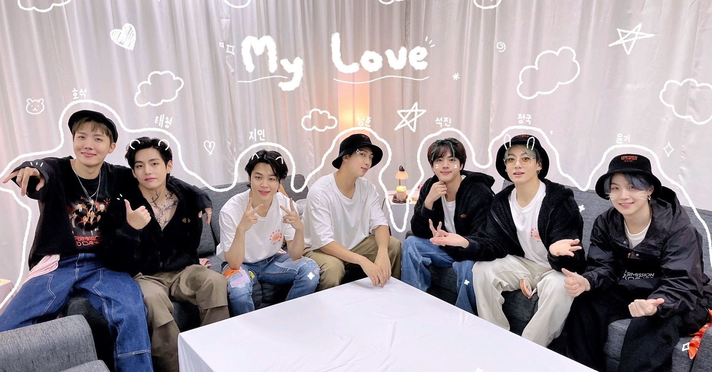
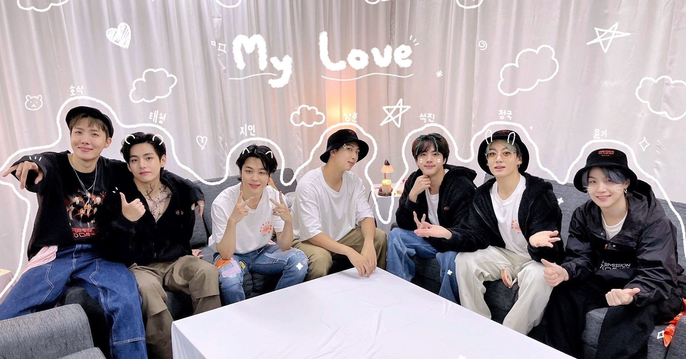

Assalamualaikum hye, my name is Alya Falihah Binti Hairudin Shah, i am 22 years old
i am from Tumpat, Kelantan and i am marketing student. I have eight siblings and
i am fifth. I have a lot of hobbies that i like to do in my leisure time. In sport
i like to play badminton but now as i am busy with many things i don't have time
to play badminton anymore. Other than playing badminton i also like to watching korean and
chinese drama. I like all the genre of drama but the most genre that i like is
medical and thriller. I also one of big fan of the korean boy band BTS and i always watching
BTS music video and their variety show called Run Bts, Bon Voyage and BTS In The Soop. My ambitioin when i was a child
is to be a policewoman but considering my height is not enough so i had to forget
that dream. So now my dream has changed to be a businesswoman.Beside that, for me "Every person is unique in his own way" as said by the famous poet Milton and i also has positive sides of me is that i like landing my ear to others by
listening to thier problems even i also have my own problem and give them my oppinion to
solve that problems. This is because i think it hurt that if you don't have anyone that
you can rely on and share your tears. No one is perfect right? I also have negative side of me.
I am introverted person and i do not know how to make a new friends. Sometimes, people think
that i am arrogant person, but the truth is not, i am just do not know how to start the communication
with the new person. But the unique of me is when i was with the people i already feel comfortable
i will be a talkative person and laugh like there is no tomorrow. I think that all about me that i want to share.


 
